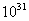

人类将会怎样灭绝
-----从五十年放眼五百亿年以后
北京大学附属中学 高二⑵班 裘丛欣
|
太阳神睁开双眼，埃及大地撒满阳光，当他闭上眼睛，埃及大地便又陷入黑暗，由此方有白昼和黑夜之分。诸神出于其口，众生出自其眼。万物莫不由他创造。他是金碧辉煌的神童，他的光芒使所有的生命都显得生机勃勃。 ----引自古埃及托勒密王朝时的禅语 所以我们不停的提问，一次又一次，/直到一捧土/堵住了我们的嘴/难道这就是答案？ ----海恩里希·海涅《拉撒路》(1854) |
引言
随着科技的发展，人类的生活变得越来越好。在此同时，高科技的副作用却是我们不能忽视的。但是人们往往只注意好的一面，而忽视不好的一面。而当我们发现科技的副作用在起作用的时候，事情可能就已经晚了。我们将无法挽救这个世界和我们自己。而人类自身的某种“对美好生活的向往”似乎会使得这种悲剧不得不发生。本文将试图探讨人类将可能怎样一步步把自己推入死亡的深渊。
预计一些将会出现的问题
医学的发展使得人类自身的维持种群健康的功能基本失去
在近现代，医学的发展非常迅速。它医治好了许多在古代不可能医治的疾病。这使得许多本来注定要死亡的人活了下来，并且生儿育女。他们的儿女可能会携带他们的遗传病，但是他们同样依靠药物存活了下来。这使得现代人携带的各种隐性(或许是显形)遗传病比古代人大大增多。虽然现代人比古代人更长寿，生活的更好，但是我们不能保证不会发生这样的事情：一旦有一天，医学发展的速度跟不上人类体质变坏的速度，这时人类便没有办法挽救自己了。
某些特殊的疾病将给人带来致命的打击
特别关注：HIV病毒
我们大家现在很清楚，爱滋病问题在非洲已经非常严重了。携带HIV病毒或者感染爱滋病的人数，无论是津巴布韦保守估计的40%或是斯威士兰“口出狂言”的70%，让人听起来都非常的触目惊心。鉴于此病并不像天花一样快速流行，即使找到了能够预防该疾病的快速有效的疫苗，也就不会像种牛痘那样见效。现在已经有非洲的科学家公开说，再过50年他们的国家里将会没有人了。虽然我们的国家和非洲如此遥远，但是也不能因此而高枕无忧。50年，给了爱滋病足够长的时间在亚洲安家落户。到那个时候，中国，北京是什么样子，现在还不好说。
当某种疾病已经非常泛滥的时候怎么办
当某种病毒已经极度泛滥的时候，人类为了挽救自己，不得不采取分离患病和健康人群的方法。这是伦理和感情上都不允许的，因为这对于患病人群意味着等待死亡。对于现在世界上流行的诸多致命疾病，即使采用这种方法也难使疾病问题得到根本上的解决。当人类对一种新出现的致命传染疾病没有任何对策的时候，他们只能等待死亡。
食物网被破坏
据说现在平均每天有一种生物灭绝。大家都很清楚，使得一种生物灭绝是一件很简单的事情，而重新进化出一种生物却很难。现在问题可能还不太明显，但是一旦当生物网的某个关键的部位遭到了破坏，生物的灭绝速度将迅速加快。这个时候人类必将坐以待毙了。
人口问题
对过去的人口数据做拟合，无论用二次函数或者指数函数，下世纪中叶的人口均会达到几百亿。几百亿绝不是个小数字，因为粮食的亩产量必然有一个极限。到那时即使是新品种粮食的产量也不足以喂饱这几百亿人。这时候餐桌上出现的(如果好一些)将是人造猪肉或者(如果情况不太好)高能营养药片。这样人的消化系统将会迅速退化。以上还没有考虑诸如住房或者水资源之类其他很多的问题。
温室效应
查看一下过去温度变化的趋势，地球正在越变越热。如果五十年后的北京夏天日最高气温达到60℃ 以上，那么人们出行将成为不可能。他们只能够呆在家里把空调开成最大功率享受那种虚假的凉爽。
臭氧层空洞
温室效应必然使得空调的数量和使用时间大大增多，这也将使臭氧层的空洞以更快的速度增大。如果臭氧层空洞出现在北京上空，那么人们将只能够天天拉上窗帘，在家里玩计算机，出行将变的更不可能。
退化
出现前面情况已经使人们无法出行了。生活在家里的人们不得不像Disney的Future House里一样(真舒服)不得不天天待在家里，享受按动按钮后送来的饭菜(用小型传送带甚至是用量子移物)。这样人的躯体不久将退化。最先出现的问题将是肥胖，新陈代谢失调等。接着可能是四肢，大脑的退化。住在豪华别墅里当肉球一定一点都不好玩。
战争
斗争似乎是一种人的天性，从原始时代爬到树上和猴子们抢香蕉吃到现在把有核弹头的导弹对准别国的首都，人都是在盼望斗争(战争)。这是人类的某种争强好胜的天性所致。而某些政客竞选的时候说的“和平”也往往是用来笼络民众的把戏。战争如果再次爆发，战士们将不是骑着马拿着长矛冲向敌方，而只要几个上将在办公室里按一下按钮。这样无论战争的速度或者破坏力都比古代强的多。或许在战争刚刚开始的时候，整个地球已经变成了一片没有人的焦土。
即使不是这样
彗星撞击
据统计，集体大灭绝大约每2600万年出现一次，今天离上一次集体大灭绝，大约1300万年。这虽然缺乏更充分的证据，不过大多数科学家支持这个大灭绝由彗星撞击所致。现在的地球正在一种被叫作“无彗星圆锥区域”的庇护下，这种庇护的周期是2600万年。这样说人大可高枕无忧了。可是人(这种伟大的生物)真的只想存在1700万年(把非洲原始人的存活时间也包括在内)，而不想像某些低等生物一样“来自遥远的古代”？大家都很清楚，进化程度很高的物种处在生物金字塔的顶端，它们通常很脆弱，经不起任何稍微大一些的打击。当打击一旦到来的时候，它们就可能从这个世界上消失了。
亲爱的太阳的死亡
到50亿年后，太阳烧完了几乎所有的燃料，然后膨胀变成红巨星，把地球吞食，再到后来坍塌成白矮星。这种理论现在已经是普遍接受的真理了。这也就是说，如果在这50亿年中地球人找不到新家，便注定要死亡了。而其他星球上是否真的存在适合人类的生存条件，这一切的一切，都还是未知数。
大坍塌
这一点就不说了，反正就是彻底完蛋。大坍塌与黑洞的边界很相似，我们处于一个时空界限内，在这个界限内的一切东西(包括光)都无法逃脱它的终极。
资源
地球上的矿产资源容不得人类再用多少年了，诸如石油天然气一类的“可再生资源”形成周期非常长，人类等不急它们的再生。这样人类就只能到外太空去寻找资源。或许很容易的在外太空寻找到铁矿，但是却很难寻找到有机物(土卫六上除外)和燃料(如果不打算烧硫磺)。而如果人类可以这样的发展，它的发展速度将会更加无法克制。但是当我们把太阳系中的能源使用殆尽时，又将面临另一次挑战。你可以想象一下两个太空人在比邻星周围某个行星(如果有的话)上，在三个太阳的光芒的照耀下(比邻星是三星)寻找钛矿的情景。而再过一些年，宇宙已经形成了宇宙岛(假定不出现大坍塌)，各个宇宙岛之间的距离将越来越远，当人类搜刮干净了我们所在的这个宇宙岛里的资源之后，前往一个上亿光年(保守估计)远的宇宙岛将是何等的困难呢(如果没有相对论就好了。但是我们可以使用虫洞或者扭曲推进，这就需要引用负能量，而负能量的需要值使得这一点几乎不可能)？
衰变
现在科学家普遍认为，50亿年后，太阳这样的恒星将发生超新星爆发，然后坍塌成一颗白矮星。当然如果它大一些，还可能坍塌成中子星甚至黑洞。白矮星靠自己内部的衰变放出能量，所以仍然发光。但是不久以后就会衰变成最稳定的铁，于是不再发光，成为一颗黑矮星。中子星的情况差不多，而黑洞将会缓慢的蒸发，当蒸发到足够小的时候，发生爆炸。于是我们可以看到一场精彩的烟火表演。我们来总结一下，在未来的天空中，不久将没有恒星的踪影，接着我们看到一些暗淡的白矮星渐渐变暗，最后消失。之后在天空中偶尔可以看到精彩的烟火表演，可是不久以后连烟火表演也没有了。最后人们便陷入了永远的黑暗中。如果人类在这种黑暗中竟然不知道为什么活了下来，那么到了年(另言年)后，连最稳定的质子也衰变成了正电子，它们将时不时的与电子发生湮灭。这样，烟火表演将重新出现在这个世界上。可是这种来自人类躯体本身的烟火表演将对人类自身没有任何诱惑力(如果人当时没有进化到可以脱离躯体的话)。接下来，如果人类便必须看着自己一点点变成光了。
结语
坐以待毙可能会非常难熬，但是人类(作为一个真正存活在这个世界上的生物)没有其他办法。并且我们必须正视它，思考它，而不是逃避它，正如上文中海恩里希·海涅的诗中所说的……
2000/9/10 10:00-12:00AM 16:00-17:00AM
Email地址： leptosome@yeah.net
Web页地址： http://leptosome.yeah.net